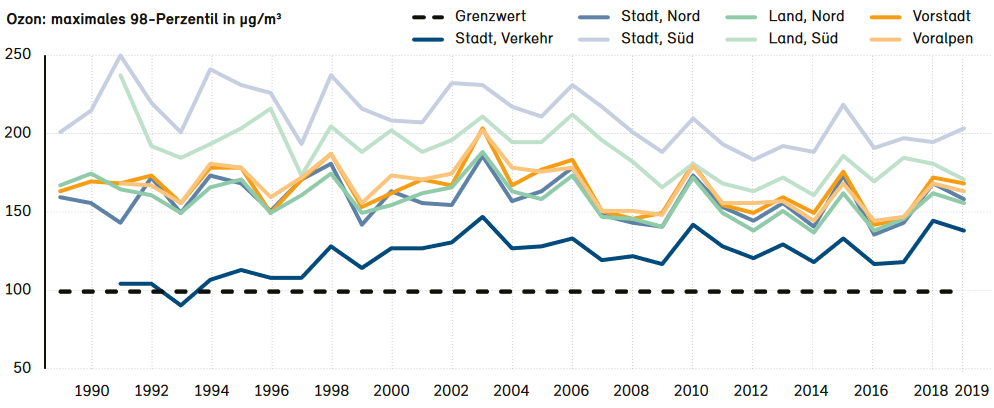

Dokumentation
Beschreibung
Die App dient zur Visualisierung der Luftverschmutzung in Basel (CH). Die App bildet drei verschiedene Visualisierungen ab: Map, Stacked Radial Area Chart und eine Heatmap.
Map
Die Map zeigt die Live-Messdaten aller sechs Standorte des Projekts Smarte Strasse in der Stadt Basel. Der Zeitpunkt der Daten wird rechts unten angezeigt. Die Kreise sind nach dem Kurzzeit-Belastungs-Index skaliert.
Stacked Radial Area Chart
Der Stacked Radial Area Chart stellt die gesamten Messwerte auf den Tag aufgeschlüsselt dar (letzten sechs Monate). Dieser Graph dient zur Darstellung der längerfristigen Entwicklung der Messwerte über den vollen Zeitrahmen. Es werden die absoluten Werte dargestellt. Jeder Ring steht für einen Schadstoff. Je weiter der Ring nach aussen verschoben wird, desto grösser ist der Wert des Schadstoffs zu dieser Uhrzeit.
Heatmap
Die Heatmap stellt die Messwerte der letzten vier Wochen je Stunde dar. Diese Visualisierung dient zur Darstellung der einzelnen Messwerte. Die Farbe der jeweiligen Tiles sind nach dem Kurzzeit-Belastungs-Index skaliert. Wird mit der Maus über ein Tile gefahren, so wird das Datum, die Uhrzeit und der Messwert in einem Tooltip angezeigt. Ist der Filter Alle Schadstoffe aktiv, so wird der KBI als Messwert angezeigt. Ansonsten wird entweder bei Alle Messstandorte als Messwert der Durchschnitt des jeweiligen Schadstoffs aller Standorte oder bei einem aktiven Filter einer Station der jeweilige Messwert angezeigt. Messwerte, welche keinen Wert haben, werden schwarz dargestellt. Beispiele:
- Filter Alle Messstandorte und Alle Schadstoffe: Messwert = höchster KBI der jeweiligen Stunde aller Messstandorte
- Filter Alle Messstandorte und PM2.5: Messwert = Durchschnitt aller Messstandorte von PM2.5 der jeweiligen Stunde
- Filter A2 Hard und Alle Schadstoffe: Messwert = höchster KBI in H2 Hard der jeweiligen Stunde
- Filter A2 Hard und PM2.5: Messwert = Messwert in H2 Hard der jeweiligen Stunde
Kurzzeit-Belastungs-Index
Der Kurzzeit-Belastungs-Index, kurz KBI, ist ein gesamtschweizerisches Index-System zur vereinfachten Kommunikation der Kurzzeit-Luftbelastung unter Berücksichtigung der gesundheitlichen Auswirkungen. Der KBI wird aus kontinuierlichen Messdaten für Ozon (O3), Stickstoffdioxid (NO2), und Feinstaub (PM10) berechnet. Für jeden Schadstoff pro Messstation wird der Index anhand des Beurteilungsrasters (siehe Tabelle unten) berechnet. Als Gesamt-Index wird der Höchste der bestimmten Indices dargestellt.
Wichtig: Für die Berechnung des KBI wird in dieser App der Feinstaub PM2.5 verwendet. Allgemein gilt, dass PM2.5 rund zwei Drittel von PM10 ausmacht. Aus diesem Grund wird für die Berechnung des KBI zwei Drittel der Grenzwerte von PM10 verwendet (siehe Tabelle unten). Dies geschieht in Absprache mit dem Lufthyghieneamt beider Basel. Das offizielle Dokument der schweizerischen Gesellschaft der Lufthygiene-Fachleute (Cercl Air) kann hier eingesehen werden.
Achtung: In dieser Visualisierung wird nur auf die Kurzzeitbelastung eingegangen. Die Immissionsgrenzwerte für einen längeren Zeitraum weichen sehr stark vom KBI ab (siehe Kapitel Interpretation).
| KBI | Belastung | O3 μg/m3 |
NO2 μg/m3 |
PM10 μg/m3 |
PM2.5 μg/m3 |
|---|---|---|---|---|---|
| 6 | sehr hoch | > 240 | > 160 | > 100 | > 66 |
| 5 | hoch | 181 - 240 | 121 - 160 | 76 - 100 | 51 - 66 |
| 4 | erheblich | 136 - 180 | 91 - 120 | 57 - 75 | 38 - 50 |
| 3 | deutlich | 121 - 135 | 81 - 90 | 51 - 56 | 34 - 37 |
| 2 | mässig | 61 - 120 | 41 - 80 | 26 - 50 | 17 - 33 |
| 1 | gering | 0 - 60 | 0 - 40 | 0 - 25 | 0 - 16 |
Schadstoffe
Für die Messung der Luftqualität werden die Schadstoffe NO2, O3 und PM2.5 gemessen. Im Folgendem werden diese genauer beschrieben. Für ausführlichere Angaben bezüglich Auswirkungen der Luftverschmutzung auf die Gesundheit hat das Swiss Tropical and Health Institute eine interaktive App entwickelt. Dort kann zwischen Kurz- und Langzeit sowie den entsprechenden Schadstoffen ausgewählt werden.
NO2
Stickstoffdioxid (NO2) entsteht beim Verbrennen von Brenn- und Treibstoffen, insbesondere bei hohen Verbrennungstemperaturen. Hauptquelle von Stickstoffdioxidausstösse ist der Strassenverkehr. Stickstoffdioxid ist eine wichtige Vorläufersubstanz für die Bildung von sauren Niederschlägen, sekundärem Feinstaub und - zusammen mit flüchtigen organischen Verbindungen (VOC) - von Sommersmog (Quelle).
O3
Ozon (O3) kommt in kleinsten Mengen in unserer Atemluft vor. Bodennah wird Ozon unter Einwirkung des Sonnenlichts aus den Vorläufersubstanzen flüchtige organische Verbindungen (VOC) und Stickstoffdioxid (NO2) gebildet. Je mehr VOC und NO2 in der Luft ist und je stärker die Sonne scheint, desto mehr Ozon wird gebildet. Aufgrund des Einflusses der industrialisierten Region rund um Mailand und den klimatischen Bedingungen (viel Sonne, wenig Wind), ist die Ozonbelastung südlich der Alpen höher als im Schweizer Mittelland. Zahlreiche Studien über Ozonbelastungen belegen den Zusammenhang zwischen der Ozonkonzenration und Atemwegserkrankungen und Herz-Kreislaufkrankheiten (Quelle).
PM2.5
Feinstaub (PM2.5) ist ein Gemisch aus kleinsten Staubteilchen von weniger als 2.5 Mikrometer. Feinstaub ist ein komplexes Gemisch und besteht aus direkt emittierten, primären Partikeln und bildet sekundäre Partikel aus Vorläuferstoffen. Die primären Partikel stammen aus:
- Verbrennungsprozessen von Motoren und Holzheizungen
- mechanischem Abrieb von Reifen, Bremsen oder Strassenbelag
- Aufwirbelung
- natürlichen Quellen wie Vulkane, Erosion oder Salz aus Meeresgischt
Die sekundären Partikel bilden sich erst in der Luft aus gasförmigen Vorläuferschadstoffen wie Schwefeldioxid, Stickoxide, Ammoniak oder flüchtige organische Verbindungen (VOC). Besonders im Winter leiden Städte und verkehrsnahe Gebiete unter zu hohen Feinstaubbelastungen.
Feinstaub wird in drei verschiedene Grössen eingeteilt (Quelle):
- ultrafeine Partikel (PM0.1)
- feine Partikel (PM2.5)
- grobe Partikel (PM10)
Anleitung
Die gesamten Visualisierungen können zum Einen nach den Schadstoffen (NO2, O3 und PM2.5) und zum Anderen nach deren gemessenem Standort gefiltert werden. Als Standard zeigt die Map den aktuellen Kurzzeit-Belastungs-Index an den sechs Standorten (St. Johannsplatz, Feldbergstrasse, A2 Hard und die drei Standorte in der Gundeldingerstrasse) an. Das Stacked Radial Area Chart zeigt als Standard die Mittelwerte aller Standorte zusammen von 0:00-24:00 und die Heatmap zeigt jeder einzelne Messwert pro Stunde der letzten vier Wochen (KBI-skaliert).
Es gibt nun drei Möglichkeiten, mit der Visualisierung zu spielen:
- Map: Beim Drücken auf einen Standort wird im Stacked Radial Area Chart und in der Heatmap nur die Daten der angeklickten Messstation angezeigt. Die angeklickte Messstation inklusive Koordinaten werden oberhalb des Stacked Area Chart angezeigt. Beim Drücken auf die gesamte Karte werden wiederum alle Messstandorte berücksichtigt.
- Stacked Radial Area Chart: Beim Drücken auf einen Ring des Stacked Radial Area Chart wird in der Map der aktuelle Feinstaub-Belastungs-Index und in der Heatmap die Daten für den angeklickten Schadstoff angezeigt.
- Auswahlliste: In der Auswahlliste unter der Heatmap kann die Anzeige der Daten ebenfalls nach NO2, O3 und PM2.5 oder allen Schadstoffen gefiltert werden. Die Visualisierungen werden entsprechend der angeklickten Variante verändert.
Der Aufforderungsbanner ganz unten bleibt solange, bis eine der oben aufgeführten Tätigkeiten ausgeführt wurde.
Daten
Die App verwendet die beiden Datensätze Luftqualität und Luftqualität Vergleichsmessungen. Die Daten werden vom Kanton Basel-Stadt in Rahmen des Projekts Smarte Strasse auf ihrem Datenportal zur Verfügung gestellt. Die App greift über eine API-Schnittstelle auf die Daten zu und lädt alle Daten der letzten sechs Monate. Es liegen für jede halbe Stunde Messungen vor. Für die Visualisierung wurden jedoch nur die Messwerte der vollen Stunden verwendet, weil der KBI auf Stundenwerte berechnet wird.
Das Projekt Smarte Strasse testet kosteneffiziente Mikrosensoren auf ihre Genauigkeit und Zuverlässigkeit. Der installierte Sensor vom Typ "Nubo" der Firma Sensirion AG ist in der Lage, die Konzentration verschiedener Schadstoffe in der Luft in Echtzeit zu ermitteln. Gemessen werden die Gehalte der Gase Stickstoffdioxid (NO2) und Ozon (O3), sowie die feinere Fraktion des Feinstaubs PM2.5. Zum Projekt gehören auch Messungen des Strassenlärms einzelner Farhzeugklassen, Daten einer E-Ladestation an einem Kabelverteilkasten sowie Sensoren zur Detektion freier Parkplätze.
Farben
Jeder Schadstoff ist mit einer Farbe verbunden, welche das Layout der Visualisierung bestimmt. Alle Schadstoffe haben die Farbe blau, NO2grün , O3 violett und PM2.5 orange.
Interpretation
Da die Visualisierung auf Grundlage von aktuellen Daten der letzten sechs Monate basiert, bezieht sich die Interpretation der Visualisierung auf die Daten Stand 30.05.2022. Aufgrund der sich stetig ändernden Belastungen wird die Interpretation der Map ausgelassen.
Das Stacked Radial Area Chart verdeutlicht, dass die drei Schadstoffimmissionen zur Hauptverkehrszeit am Morgen und am Abend am Höchsten sind. Morgens fällt der Peak höher aus als Abends. Eine mögliche Erklärung dafür liegt in der Annahme, dass am Morgen die meisten Leute zur gleichen Zeit zur Arbeit fahren, während sich am Abend die Menge auf mehrere Stunden verteilt. Der Schadstoff NO2 zeigt dabei die grössten Ausschläge. Wie bereits in der Dokumentation der Schadstoffe erkärt, entsteht NO2 hauptsächlich beim Verbrennen von Brenn- und Treibstoffen. Diese Verbrennung findet somit zur Hauptverkehrszeit statt. Der Schadstoff O3 hingegen zeigt eine gegenläufige Tendenz, d.h. er nimmt nach der Hauptverkehrszeit am Morgen zu und auf die Nacht hin wieder ab. Dieses Verhalten geht vor allem auf das Sonnenlicht zurück. Je stärker die Sonne scheint, desto mehr Ozon wird gebildet. Die Immissionen des Schadstoffs PM2.5 unterliegen praktisch keinen Schwankungen über den Tag. Ihre Immissionswerte sind konstant über den Tag verteilt.
Interessant ist Aufschlüsselung nach den Standorten. So ist zu erkennen, dass an der Autobahn A2 Hard die Stickstoffdioxid-Immissionen während den Hauptverkehrszeiten fast immer zwischen mässig und deutlich liegen, wo hingegen die Immissionen an der Gundeldingerstrasse auch zu Hauptverkehrszeiten fast nie über gering gehen. Dies zeigt den starken Zusammenhang, welcher der Verkehr auf die Luftverschmutzung hat.
In der Hetamap ist ersichtlich, dass die Immissionswerte nie über den KBI-Index von 3 (deutliche Belastung) steigt. Diese doch erfreuliche Erkenntnis ist jedoch mit Vorsicht zu geniessen. Wie im Kapitel KBI angetönt, wird bei der Luftverschmutzung zwischen Kurz- und Langzeitbelastung unterschieden. Die in dieser Visualisierung verwendete Kurzzeitbelastung hat viel höhere Grenzwerte als die Langzeitbelastung. Die Abbildungen 1, 2 und 3 zeigen den Verlauf der Langzeitbelastung von Feinstaub, Stickstoffdioxid und Ozon in der ganzen Schweiz (Quelle).
Abbildung 1: Feinstaubbelastung von 1998 - 2019
Abbildung 2: Stickstoffdioxidbelastung von 1986 - 2019
Abbildung 3: Ozonbelastung von 1989 - 2019
Bei der Betrachtung der Langzeitbelastung ist beim Feinstaub zu erkennen, dass die Werte über die Zeit gesunken sind und nun nah bzw. unter dem Grenzwert liegen. Das Gleiche gilt für Stickstoffdioxid, wobei hier nur die Messstationen in der Stadt und nahe dem Verkehr noch über dem Grendwert liegen. Ein ganz anderes Bild zeigt der Verlauf der Ozonbelastung. Diese hat sich über die Jahre immer wieder mit starken Ausreissern ausgezeichnet. Es ist keine Abnahme der Belastung über die Zeit zu erkennen. Bei Feinstaub und Stickstoffdioxid sind die Messwerte in der Stadt höher als auf dem Land. Beim Ozon ist das Gegenteil zu erkennen. Dieser Unterschied ist auf die im Kapitel O3 beschriebene Charakteristiken zurückzuführen, da Ozon vor allem aus VOC, NO2 und der Sonneneinstrahlung gebildet wird. Die Topografie der Stadt hat einen negativen Einfluss auf die Strahlungskraft der Sonne und somit auch auf die Ozonbildung.
Seit Mitte der achtziger Jahre ist die Luftreinhaltegesetzgebung in Kraft getreten. Wie in den Abbildungen zu entnehmen ist, hat sich seither die Luftqualität in der Schweiz dank zahlreicher Luftreinhaltemassnahmen wesentlich verbessert und das Risiko für eine Einzelperson, an den Folgen der Luftverschmutzung zu erkranken oder zu sterben, ist deutlich gesunken. Für die Bevölkerung stellen die gesundheitlichen Auswirkungen von kurzfristig erhöhten Schadstoffbelastungen der Luft allerdings weiterhin ein relevantes Problem dar. Besonders betroffen sind empfindlich reagierende Personen, wie Kinder, ältere und kranke Menschen. Deshalb ist es umso wichtiger, die Kurzzeit-Luftbelastung zu überwachen und verringern. Die Kantone Basel-Stadt und Basel-Landschaft haben dazu das Lufthyghieneamt gebildet. Es vollzieht die Vorschriften der Luftreinhalteverordnung, indem es Auflagen für industrielle und gewerbliche Anlagen festlegt und diese durch Betriebskontrollen überprüft. Bei Grenzüberschreitungen werden Massnahmepläne erarbeitet und umgesetzt.
Short Facts Luftverschmutzung
Luftverschmutzung verursacht in der Schweiz laut Studien jährlich externe, nicht vom Verursacher gedeckte Folgekosten in Milliardenhöhe. Link
Wegen Luftschadstoff bedingten Atemwegs- und Herz-Kreislauferkrankungen werden in der Schweiz jährlich ca. 14'000 Tage im Spital verbracht. Link
Die Gesundheit von Kindern und Erwachsenen kann relativ rasch verbessert werden, wenn der Schadstoffgehalt der Luft abnimmt. Massnahmen zur Verbesserung der Luftqualität haben also einen messbaren positiven Einfluss auf die Volksgesundheit. Link
Eine für das Jahr 2018 aktualisierte Studie des Bundesamts für Raumentwicklung ARE kommt zum Ergebnis, dass wegen der Luftverschmutzung in der Schweiz jährlich rund 2'300 Personen vorzeitig sterben. Link
Bangladesch ist das Land mit der weltweit höchsten Luftverschmutzung. Die Schweiz steht an 87. Stelle. Link
Über diese App
Diese App wurde im Rahmen der Mastervorlesung Durchführung eines Open Data Projekts der Forschungsstelle Digitale Nachhaltigkeit an der Universität Bern programmiert.
Ein herzliches Vergelt's Gott geht an dieser Stelle an Boris Djakovic der Fachstelle für Open Government Data des Kantons Basel-Stadt. Er begleitete die Entwicklung der App und stand als Data Coach beratend zur Seite. Für die Visualisierung wurde ein Code-Snipped von Scott Cheng verwendet.
Für die Programmierung der App wurde D3.js, Bootstrap und Colorbrewer verwendet.
Der Source-Code ist auf Github frei zugänglich.
Andy Ritz
Student MSc Business Administration, Universität Bern